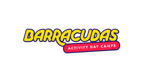
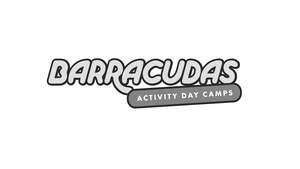

Trade Mark Journal No.2026/008 20 February 2026
UK00004335337 4 February 2026 (35,41,43)
Mark 1

Mark 2

- Class 35
- Advertising; business management; business administration; office functions; Advertising services provided via the Internet; Advertising services; Advisory services relating to the operation of franchises; Assistance in franchised commercial business management; Business advertising services relating to franchising; Business advice relating to franchising; Business assistance relating to franchising; Business consultancy services; Business franchising; Data processing; Franchising services providing business assistance; Franchising services providing marketing assistance; Management advisory services related to franchising; Marketing services; Organisation, operation and supervision of loyalty and incentive schemes; Providing assistance in the field of business management within the framework of a franchise contract; Providing assistance in the field of product commercialization within the framework of a franchise contract; Provision of business information relating to franchising; Provision of business information; Publicity services; Services rendered by a franchisor, namely, assistance in the running or management of industrial or commercial enterprises; Retail, wholesale, internet retail or mail order services connected with the sale of clothing, footwear, hats, games, sporting goods, printed matter, catalogues, printed cards, visiting cards, pictures, photographs, sporting articles, sporting apparatus, balls for use in sports, bottles sold empty, drinking vessels, plush toys, luggage, bags, rucksacks, backpacks, sporting bags, sports bags, bags adapted for carrying sporting articles and apparatus, articles of clothing for sport, articles of clothing for exercise activities, jackets, pullovers, hoods (clothing), t-shirts, skirts, shorts, trousers, socks, gloves, scarves, footwear, headbands, sweatbands, headgear, baseball caps, caps; Information, advice or consultancy services relating to the aforesaid.
- Class 41
- Education; providing of training; entertainment; sporting and cultural activities; Activity day camp services for children; Activity day camp services; Activity programmes for children; Arranging and conducting seminars, conferences and exhibitions relating to sports; Arranging of competitions (education or entertainment); Arranging of shows; Awarding of prizes; Provision of sporting facilities; Children's entertainment services; Coaching and providing training assistance to athletes; Day camps; Educational services relating to sports; Information relating to sports entertainment; Information relating to sports provided on-line from a computer database or the internet; Leisure services; Multi-activity camp services; Organization of exhibitions for cultural or educational purposes; Organization of sports competitions; Photographic reporting; Pre school teaching; Providing of training; Publication of educational teaching materials; Provision of educational entertainment services for children in after school centers; Provision of educational entertainment services for children in school holidays; Provision of educational entertainment services for children outside of school hours; Rental of sporting facilities; Rental of stadium facilities; School holiday childcare; Services for teaching of sports; Sport programmes for children; Sporting and cultural activities, organization of sports competitions; Sports club services; Sports coaching and training; Sport camps; Recreational camps; Holiday camp services; Ticket agencies (entertainment); Ticket procurement; Timing of sports events; Training and coaching sports players, referees, umpires and teachers; Information, advice or consultancy services relating to the aforesaid.
- Class 43
- Services for providing food and drink; temporary accommodation; Booking and reservation services for restaurants and holiday accommodation; Catering services; Child minding services; Creche services; Provision of holiday accommodation; Restaurant services; Child care services; Information, advice or consultancy services relating to the aforesaid.
YOUNG WORLD LEISURE GROUP LIMITED
Representative: Brand Protect Limited